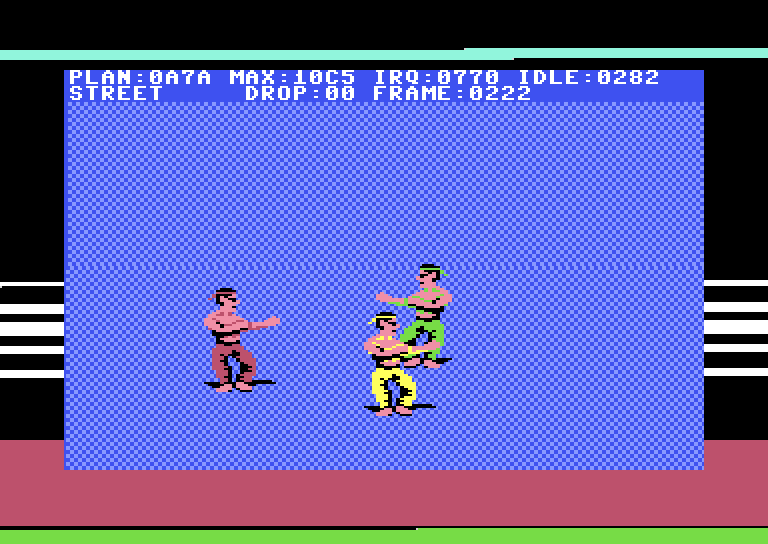
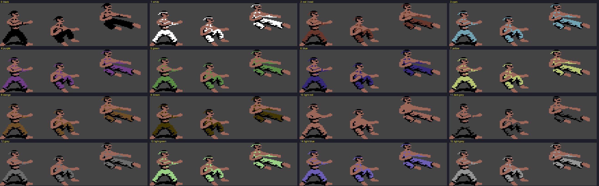

DEVLOG #2 · FIST II REMASTER · V1.0 → V3.1
היום הגדול
· 2 דקות קריאה

7 באוקטובר: 98 קומיטים, ארבעה תגים, ובלילה שלושה לוחמים על המסך ב־50 Hz נקיים.
12:12 · v1.0-baseline
קודם, כל המשחק כקוד מקור עם שמות, ב־fist2.asm. אחרי
אסמבלר הוא זהה למקור לגמרי: 0 מתוך 64,512 בתים שונים. הלוחמים הפכו לקבצי SpritePad, העולם לקבצי CharPad
והמוזיקה לקובץ SID, וכל אחד מהם הוכח בבנייה חזרה.
13:30 · v2.0-inhouse
אחר כך הכתיבה מחדש בסגנון שלי, זה מהדמואים שלי. אותו משחק, נבדק בשלוש דרכים: זהה ב־10 צילומי מסך מוקפאים, כל כתיבת רסטר באותה שורה ובאותו מחזור, ואותו זרם SID, כל 51,269 הכתיבות שלו.
13:49 · אב טיפוס מסוכן
Fist II מציג שני לוחמים על המסך. אנחנו רצינו שלושה. אב טיפוס נתן לכל לוחם נתיב משלו של ספרייטים בחומרה, כשהנתיבים נבחרים לפי העומק.

17:26 · שלבים מ־CharPad
אחר הצהריים, צינור השלבים: שלבים שמצוירים ב־CharPad על אריחים של 4×4, לכל היותר 216 תווים, עד 984 עמודות רוחב, חתוכים לחדרים. שלב 1 יצא שלושה חדרים ושלוש נקודות הופעה ב־1,872 מתוך 4,559 בתים, והחדרים שמפוענחים בחזרה מהבתים של המנוע זהים למפת ה־CharPad פיקסל אחר פיקסל.
22:14 · v3.0-alpha, חדר הקרב
הדבר האמיתי: השחקן ושני אויבים בחדר הג'ונגל, ארוזים לפי סדר העומק על 8 הספרייטים של החומרה. 0 פריימים מאחרים, 0 פריימים קרועים מתוך 500, 0 תנוחות שגויות מתוך 896. התנוחות שמופיעות על המסך תוך פריים אחד עלו מ־15.4% ל־92.6%, והמקרה הגרוע ירד מ־19 פריימים ל־4. זה לקח 11 תיקונים. הלוחמים חושבים ב־2 מתוך 3 פריימים, והתמונה רצה ב־50 Hz.
BYTES DIFFERENT
0 / 64,512
SID WRITES MATCHED
51,269
POSES ON TIME
15% → 95%
00:33 · v3.1-alpha, אחרי חצות
עוד אחד לפני השינה: הראשים מצוירים בתוך 54 תנוחות הקרב, כך ששום דבר לא מודבק בזמן ריצה, השחקן בכחול, והמוזיקה חזרה. תנוחות על המסך תוך פריים אחד: 95.0%.
